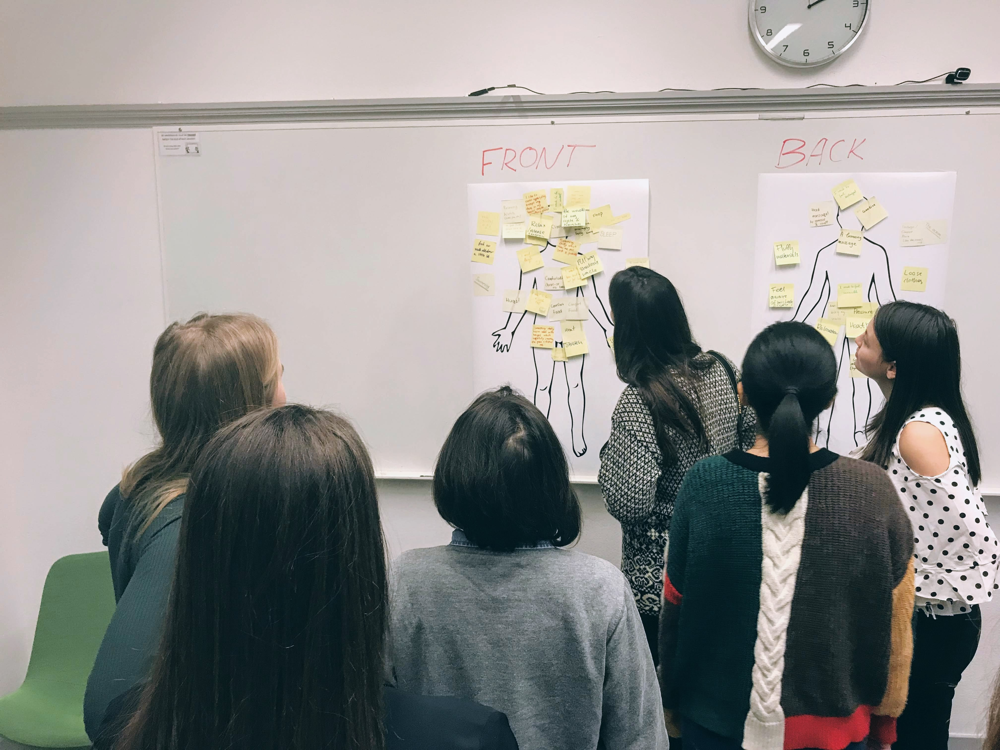
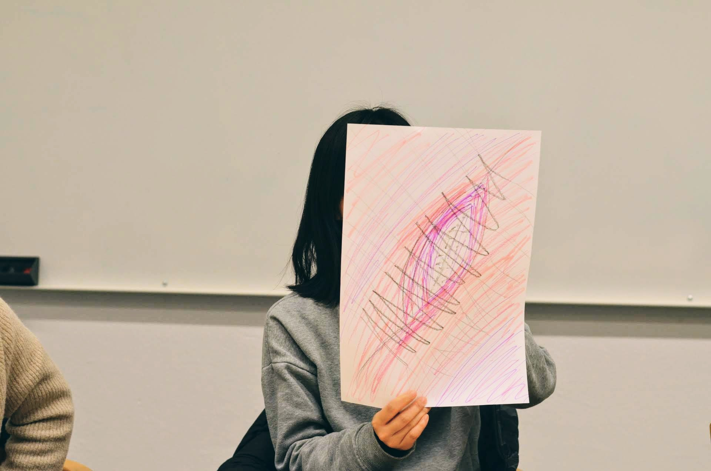
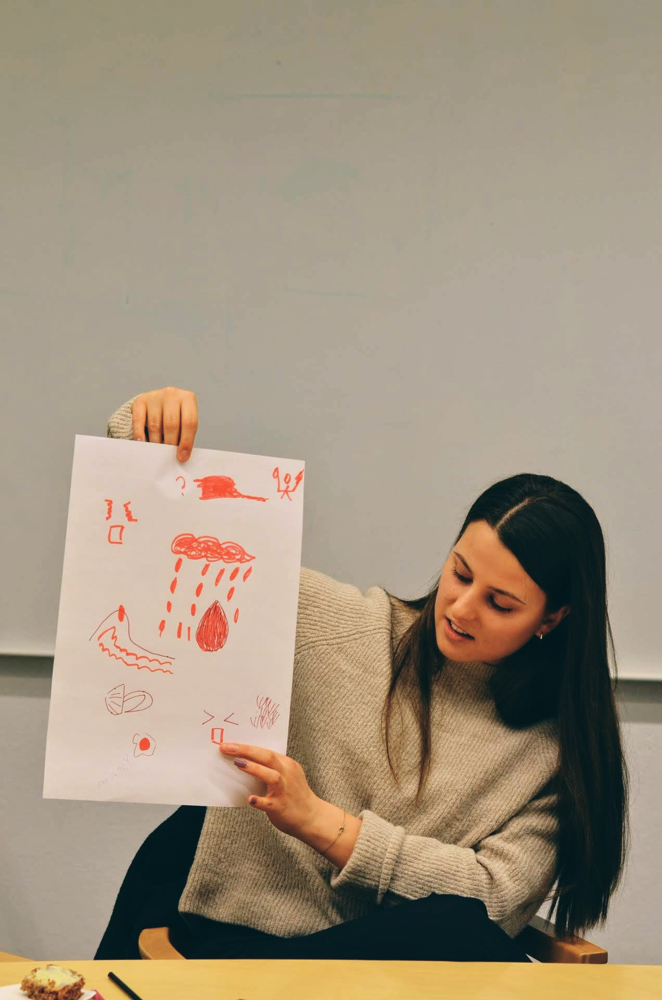
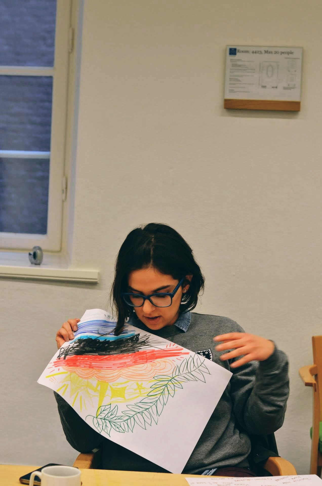
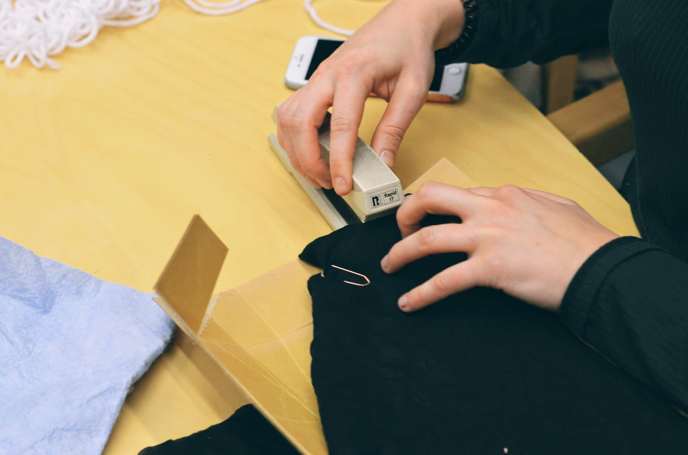
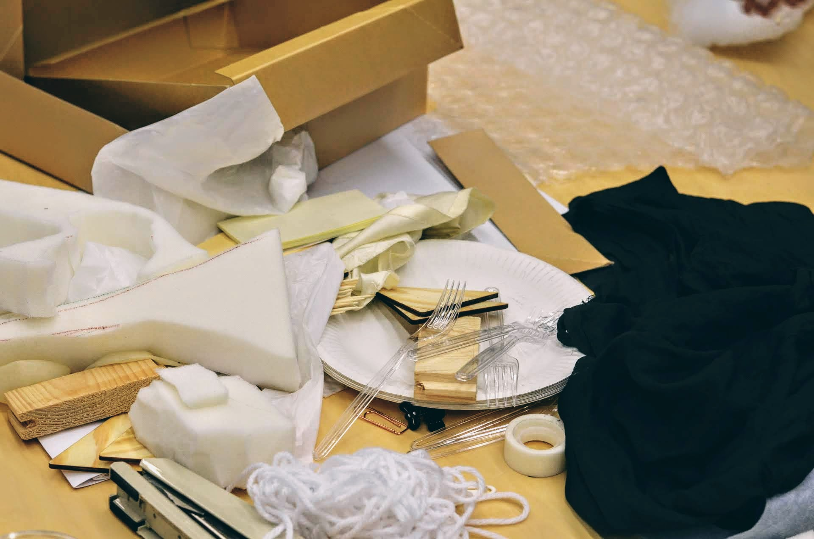
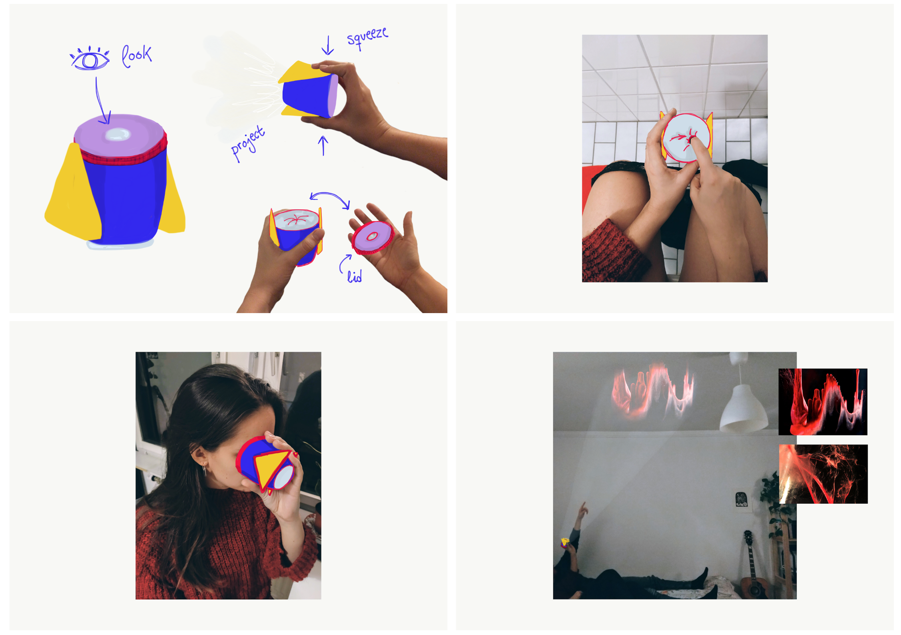
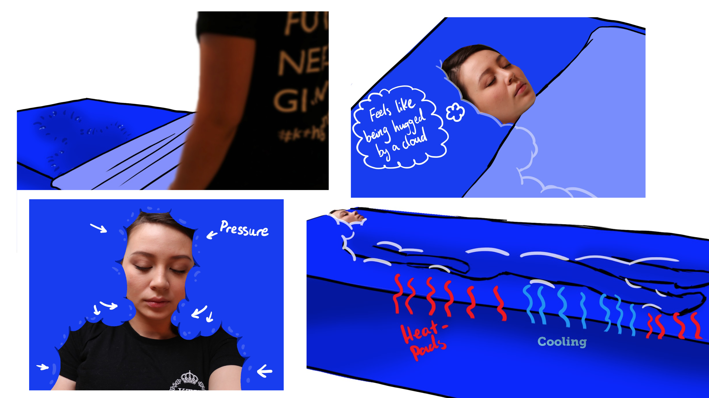

HACK THE PERIOD
A workshop and design guidelines for designing menstrual technologies
Keywords: menstruation, design workshop, magic machines
A project by Nadia Campo Woytuk, Linette Nilsson and Star Mingxing Liu
Technologies concerning menstruation have often featured symbols and icons such as locks or secret diaries, using passwords and features that help hide or encode the app’s actual use. Similarly, the message that many menstrual products promote is that seeking the least amount of interaction with one’s actual body and with the period itself is what is most desired. Product advertisements have often used euphemisms such as "the blue liquid" and urged women to strive for a carefree and worry-less period, playing on their fears of embarrassment and shame. In our work, we outline the need for a menstruation-positive approach, designing for menstruation rather than against it. Rather than dismissing the trouble of menstruation, we design with and for it.
Building from a Research through Design approach, we explore the design space and underline the tensions emerging from first-hand experiences and reflections in a design workshop. In order to maintain a positive approach, rather than asking participants what problems or needs they encountered while on their period, we asked them what desires they had, and what experiences might help them cope with it.
 The workshop was conducted in three parts, illustrating your period, exploring what desires exist when menstruating and creating Magic Menstruation Machines.
 The results of the workshop emphasized the need for reflecting critically on how we perceive menstruation when designing and how viewing menstruation as a problem might perpetuate taboos and distance women’s experiences from their bodies.
"See my blood" was a provocative device that magnified a drop of menstrual blood, creating visual patterns to observe by peeking into it or using the incorporated projector to share it with others. With this design, menstruation could quickly go from a private to a shared experience, underlining that sharing the experience of menstruation can be desired.
"The cocoon" consists of a bed one can lie in and be enveloped by soft materials shifting in temperature and applying pressure to release tension. While this design addresses a desire present during menstruation, its heating and cooling sensations can also be desired during the rest of the menstrual cycle.
